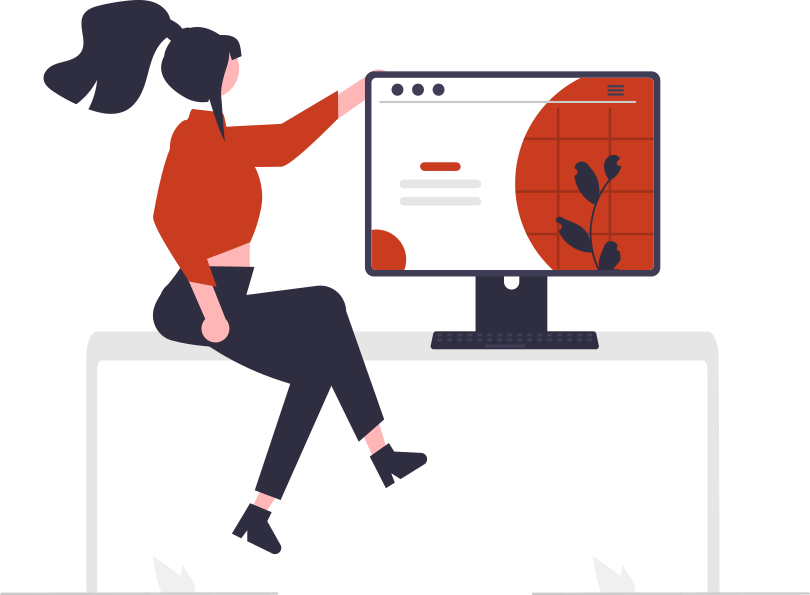

Designs
Desktop
Mobile

These are some examples of all the buttons that you can customize for your peojects. You can choose the width, height, colors and any additional effects that you want. We invite you to add more buttons to this open source project in our repository.